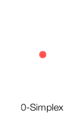
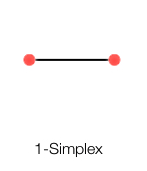
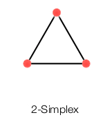
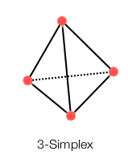
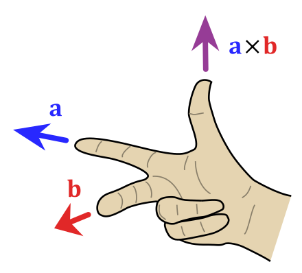
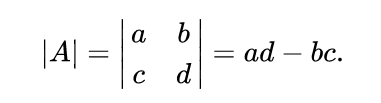
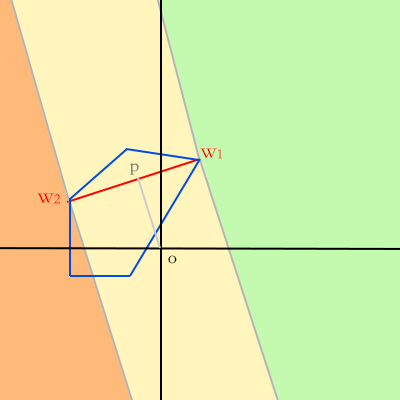
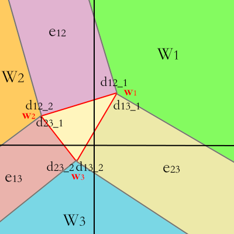

<!DOCTYPE html>
<html>
  <head>
    <title>碰撞检测算法(二)：原始GJK详解 – Wyman的原创技术博客 – 恭喜你发现我的小站，撩我请加QQ：234707482、Wechat：_Wyman</title>

        <meta charset="utf-8" />
    <meta content='text/html; charset=utf-8' http-equiv='Content-Type'>
    <meta http-equiv='X-UA-Compatible' content='IE=edge'>
    <meta name='viewport' content='width=device-width, initial-scale=1.0, maximum-scale=1.0'>
    <meta name="baidu-site-verification" content="0OpfO1OtHA" />
    
    <meta name="description" content="GJK，全称Gilbert–Johnson–Keerthi distance algorithm，是非常常用的碰撞检测算法。

原始GJK的功能：准确地告诉调用者2个几何体是否碰撞。

GJK的主要特性：


只适用于凸体
GJK算法与维度无关，2D、3D都可以用
不要求对顶点数组做排序
存在一些技巧可以大大优化GJK的性能


本文将详解原始GJK的来龙去脉。

目录：


数学知识点


闵可夫斯基数学 Minkowski Math
单纯形 Simplex
向量混合积 Vector Triple Product

GJK算法原理


GJK伪代码
Support函数
NearestSimplex函数

二维平面的GJK算法实现 


b2Distance核心逻辑
b2Simplex::GetSearchDirection
b2Simplex::Solve2
b2Simplex::Solve3
b2DistanceProxy::GetSupport

其他细节 
参考资料 


GJK各种实现


" />
    <meta property="og:description" content="GJK，全称Gilbert–Johnson–Keerthi distance algorithm，是非常常用的碰撞检测算法。

原始GJK的功能：准确地告诉调用者2个几何体是否碰撞。

GJK的主要特性：


只适用于凸体
GJK算法与维度无关，2D、3D都可以用
不要求对顶点数组做排序
存在一些技巧可以大大优化GJK的性能


本文将详解原始GJK的来龙去脉。

目录：


数学知识点


闵可夫斯基数学 Minkowski Math
单纯形 Simplex
向量混合积 Vector Triple Product

GJK算法原理


GJK伪代码
Support函数
NearestSimplex函数

二维平面的GJK算法实现 


b2Distance核心逻辑
b2Simplex::GetSearchDirection
b2Simplex::Solve2
b2Simplex::Solve3
b2DistanceProxy::GetSupport

其他细节 
参考资料 


GJK各种实现


" />
    
    <meta name="author" content="Wyman的原创技术博客" />

    
    <meta property="og:title" content="碰撞检测算法(二)：原始GJK详解" />
    <meta property="twitter:title" content="碰撞检测算法(二)：原始GJK详解" />
    

    <!--[if lt IE 9]>
      <script src="http://html5shiv.googlecode.com/svn/trunk/html5.js"></script>
    <![endif]-->

    <link rel="stylesheet" type="text/css" href="/style.css" />
    <link rel="alternate" type="application/rss+xml" title="Wyman的原创技术博客 - 恭喜你发现我的小站，撩我请加QQ：234707482、Wechat：_Wyman" href="/feed.xml" />
    
	<!-- Google Analytics -->
	<script>
		(function(i,s,o,g,r,a,m){i['GoogleAnalyticsObject']=r;i[r]=i[r]||function(){
		(i[r].q=i[r].q||[]).push(arguments)},i[r].l=1*new Date();a=s.createElement(o),
		m=s.getElementsByTagName(o)[0];a.async=1;a.src=g;m.parentNode.insertBefore(a,m)
		})(window,document,'script','//www.google-analytics.com/analytics.js','ga');

		ga('create', 'UA-65954265-1', 'auto');
		ga('send', 'pageview', {
		  'page': '/collision-detection-2/',
		  'title': '碰撞检测算法(二)：原始GJK详解'
		});
	</script>
	<!-- End Google Analytics -->
	<!-- Baidu Analytics -->
	<script>
		var _hmt = _hmt || [];
		(function() {
		  var hm = document.createElement("script");
		  hm.src = "//hm.baidu.com/hm.js?0dc968591d8c64196a37eca9ca4f86b3";
		  var s = document.getElementsByTagName("script")[0]; 
		  s.parentNode.insertBefore(hm, s);
		})();
	</script>
	<!-- End Baidu Analytics -->

  </head>

  <body>
    <div class="wrapper-masthead">
      <div class="container">
        <header class="masthead clearfix">
          <a href="/" class="site-avatar"></a>

          <div class="site-info">
            <h1 class="site-name"><a href="/">Wyman的原创技术博客</a></h1>
            <p class="site-description">恭喜你发现我的小站，撩我请加QQ：234707482、Wechat：_Wyman</p>
          </div>

          <nav>
            <a href="/">Blog</a>
            <a href="/about">About</a>
          </nav>
        </header>
      </div>
    </div>

    <nav class="nav2">
      <ul></ul>
    </nav>

    <div id="main" role="main" class="container">
      <section>  
        <script src="https://code.jquery.com/jquery-3.3.0.min.js" integrity="sha256-RTQy8VOmNlT6b2PIRur37p6JEBZUE7o8wPgMvu18MC4=" crossorigin="anonymous"></script>
<script src="/main.js"></script>
<script src='https://cdnjs.cloudflare.com/ajax/libs/mathjax/2.7.4/MathJax.js?config=TeX-MML-AM_CHTML' async></script>
<h1>碰撞检测算法(二)：原始GJK详解</h1>
 <h3>Tags: <a href="/tag/collision-detection/" rel="tag">collision detection</a></h3>
<article class="post">
    
    <div class="entry">
        <p>GJK，全称<a href="https://en.wikipedia.org/wiki/Gilbert%E2%80%93Johnson%E2%80%93Keerthi_distance_algorithm">Gilbert–Johnson–Keerthi distance algorithm</a>，是非常常用的碰撞检测算法。</p>

<p>原始GJK的功能：准确地告诉调用者2个几何体<strong>是否</strong>碰撞。</p>

<p>GJK的主要特性：</p>

<ul>
<li>只适用于凸体</li>
<li>GJK算法与维度无关，2D、3D都可以用</li>
<li>不要求对顶点数组做排序</li>
<li>存在一些技巧可以大大优化GJK的性能</li>
</ul>

<p>本文将详解原始GJK的来龙去脉。</p>

<h3>目录：</h3>

<ul>
<li><a href="#1">数学知识点</a>

<ul>
<li><a href="#1.1">闵可夫斯基数学 Minkowski Math</a></li>
<li><a href="#1.2">单纯形 Simplex</a></li>
<li><a href="#1.3">向量混合积 Vector Triple Product</a></li>
</ul></li>
<li><a href="#2">GJK算法原理</a>

<ul>
<li><a href="#2.1">GJK伪代码</a></li>
<li><a href="#2.2">Support函数</a></li>
<li><a href="#2.3">NearestSimplex函数</a></li>
</ul></li>
<li><a href="#3">二维平面的GJK算法实现</a> 

<ul>
<li><a href="#3.1">b2Distance核心逻辑</a></li>
<li><a href="#3.2">b2Simplex::GetSearchDirection</a></li>
<li><a href="#3.3">b2Simplex::Solve2</a></li>
<li><a href="#3.4">b2Simplex::Solve3</a></li>
<li><a href="#3.5">b2DistanceProxy::GetSupport</a></li>
</ul></li>
<li><a href="#4">其他细节</a> </li>
<li><a href="#5">参考资料</a> 

<ul>
<li><a href="#5.1">GJK各种实现</a></li>
</ul></li>
</ul>

<!--more-->

<h1><div id="1">数学知识点</div></h1>

<p>原始GJK包含的知识点：</p>

<ul>
<li>闵可夫斯基和 Minkowski sum</li>
<li>向量混合积 vector triple product</li>
<li>2D叉积公式</li>
<li>质心坐标公式</li>
<li>k阶单纯形 k-Simplex</li>
<li>supporting point和Support函数</li>
</ul>

<p>其中有几个点放到后面的算法实现一节再介绍。</p>

<h2><div id="1.1">闵可夫斯基数学 Minkowski Math</div></h2>

<h3>Minkowski扩大运算  <a href="https://en.wikipedia.org/wiki/Minkowski_addition">Minkowski Sum</a></h3>

<p>\[ A \oplus B = \bigcup _{b \in B} A^{b}  \]</p>

<p>其中，\(A^{b} = \{ a + b | a \in A\}  = A + b \)，代表集合A整体移动b</p>

<p>（可以理解为几何形状的Union并集运算）</p>

<h3>Minkowski收缩运算</h3>

<p>\[ A \ominus B = \bigcap _{b \in B} A^{-b}  \]</p>

<p>其中，\(A^{-b} = \{ a - b | a \in A\}  = A - b \)，代表集合A整体移动-b</p>

<p>（可以理解为几何形状的Intersect交集运算）</p>

<h3>Minkowski减法运算（Minkowski差)</h3>

<p>\[ A - B =  A \oplus (-B)  \]</p>

<p>这条公式才是真正应用到GJK算法里的公式。</p>

<p>可以理解为B先做了一次镜像，然后再和A做并集运算。</p>

<p>所以，说到GJK的Minkowski运算时，可以叫Minkowski和，也可以叫Minkowski差。anyway。</p>

<h2>向量混合积 Vector Triple Product</h2>

<p>曾经，我在我的<a href="http://127.0.0.1:4000/triangle-intersect/">用线性代数知识解决光线和三角形的交点问题</a>一文中提到了一个数学公式，叫<strong>标量混合积(Scalar Triple Product)</strong>。</p>

<p>而在GJK中，需要用到相似的另一个东西——<strong><a href="https://en.wikipedia.org/wiki/Triple_product">向量混合积(Vector Triple Product)</a></strong>, 同时也被称为<strong>BAC-CAB特性</strong>:</p>

<p>\[ A\times (B\times C) = B(A\cdot C) - C(A\cdot B) \]</p>

<p>\[ (A\times B)\times C = -C\times (A\times B) \]</p>

<p>\[ (A\times B)\times C = B(A\cdot C) - A(B\cdot C)  \]</p>

<p>Proof: <a href="https://en.wikipedia.org/wiki/Triple_product#Proof">https://en.wikipedia.org/wiki/Triple_product#Proof</a></p>

<p>GJK使用的第三条公式。</p>

<h2><div id="1.2">单纯形 <a href="https://en.wikipedia.org/wiki/Simplex">Simplex</a></div></h2>

<p>按照wiki的解释，k阶单纯形，指的是k维空间中的多胞形，且多胞形是k+1个顶点组成的凸包。根据这个定义出发，就可以理解GJK算法中会提到的各种Simplex是什么东西：</p>

<h3>0阶单纯形 0-Simplex</h3>

<p></p>

<p>根据前面的定义，0阶单纯形是0维空间下的0+1=1个顶点组成的凸包，显然只能是一个点。</p>

<h3>1阶单纯形 1-Simplex</h3>

<p></p>

<p>1阶单纯形，1维空间，1+1=2个顶点，所以就是一条直线（1维空间）上的一个线段。</p>

<h3>2阶单纯形 2-Simplex</h3>

<p></p>

<p>2阶单纯形，2维空间，2+1=3个顶点，所以就是一个平面（2维空间）上的一个三角形，三角形我们就熟悉了，显然是一个凸包无误。</p>

<h3>3阶单纯形 3-Simplex</h3>

<p></p>

<p>3阶单纯形，3维空间，3+1=4个顶点，所以就是3维立体空间里的一个四面体(tetrahedron)，显然也是一个凸包。</p>

<h3>k&gt;3阶单纯形</h3>

<p>我想读者做的都是2D或3D的项目，2D项目最多用到2-Simplex，3D项目最多用到3-Simplex。k&gt;3的Simplex，忽略吧。</p>

<h1><div id="2">GJK算法原理</div></h1>

<p>GJK算法，本质就是利用Minkowski差来判断2个几何体有没碰撞。</p>

<p>因为如果碰撞了，那么2个几何体至少包含了同一个点，也就意味着它们的Minkowski差必然包含原点。</p>

<p>明白这一点后，GJK其实就已经学到大半了。</p>

<h2><div id="2.1">划重点：来自wiki的GJK伪代码</div></h2>

<p>经过查阅大量资料，发现还是wiki对GJK的解释一语中的，所以下面介绍下wiki给出的GJK伪代码：</p>
<div class="highlight"><pre><code class="language-js" data-lang="js"><span class="kd">function</span> <span class="nx">GJK_intersection</span><span class="p">(</span><span class="nx">shape</span> <span class="nx">p</span><span class="p">,</span> <span class="nx">shape</span> <span class="nx">q</span><span class="p">,</span> <span class="nx">vector</span> <span class="nx">D</span><span class="p">):</span>
    <span class="nx">vector</span>  <span class="nx">A</span> <span class="o">=</span> <span class="nx">Support</span><span class="p">(</span><span class="nx">p</span><span class="p">,</span> <span class="nx">D</span><span class="p">)</span> <span class="o">-</span> <span class="nx">Support</span><span class="p">(</span><span class="nx">q</span><span class="p">,</span> <span class="o">-</span><span class="nx">D</span><span class="p">)</span>
    <span class="nx">simplex</span> <span class="nx">s</span> <span class="o">=</span> <span class="p">{</span><span class="nx">A</span><span class="p">}</span>
    <span class="nx">D</span> <span class="o">=</span> <span class="o">-</span><span class="nx">A</span>
    <span class="nx">loop</span><span class="p">:</span>
        <span class="nx">A</span> <span class="o">=</span> <span class="nx">Support</span><span class="p">(</span><span class="nx">p</span><span class="p">,</span> <span class="nx">D</span><span class="p">)</span> <span class="o">-</span> <span class="nx">Support</span><span class="p">(</span><span class="nx">q</span><span class="p">,</span> <span class="o">-</span><span class="nx">D</span><span class="p">)</span>
        <span class="k">if</span> <span class="nx">dot</span><span class="p">(</span><span class="nx">A</span><span class="p">,</span> <span class="nx">D</span><span class="p">)</span> <span class="o">&lt;</span> <span class="mi">0</span><span class="p">:</span>
          <span class="nx">reject</span>
        <span class="nx">s</span> <span class="o">=</span> <span class="nx">s</span> <span class="err">∪</span> <span class="nx">A</span>
        <span class="nx">s</span><span class="p">,</span> <span class="nx">D</span><span class="p">,</span> <span class="nx">contains_origin</span> <span class="o">=</span> <span class="nx">NearestSimplex</span><span class="p">(</span><span class="nx">s</span><span class="p">)</span>
        <span class="k">if</span> <span class="nx">contains_origin</span><span class="p">:</span>
          <span class="nx">accept</span>
</code></pre></div>
<p>这份代码准确描述了<strong>原始</strong>GJK的核心逻辑：<strong>只需要输入2个shape和一个初始方向，就能告诉你这2个shape有没碰撞</strong></p>

<ol>
<li><p>分别沿着初始方向D和反方向-D，求出p和q的supporting point，并计算Minkowski差，得到向量A。</p></li>
<li><p>把A输入单纯形s，此时单纯形为0-simplex (如果你不知道是什么，说明没看上文)</p></li>
<li><p>D重新设置为-A (这一步操作不是很关键，可以不深究为什么)</p></li>
<li><p>进入循环:</p>

<ol>
<li>同步骤1类似，计算下一个Minkowski差，并依然赋值给A（这里要注意到，A永远是最新计算得到的Minkowski差向量）</li>
<li>判断A和D的点积是否小于0，实际上就是判断A和D的夹角是不是大于90度。或者换句话说，A在D方向上的投影距离，是否小于0，小于0说明投影在了D的反方向上。所以，如果点积小于0，说明不能在DO方向上找到离原点Origin更近的Minkowski差顶点，这个A被reject，GJK返回false，2个shape没有碰撞。</li>
<li>到了这里，说明新的A离原点更近了，那么把A加进单纯形，此时单纯形含有2个顶点，所以是1-simplex</li>
<li>经过NearestSimplex过滤，得到新的单纯形s，以及更新了方向向量D，contains_origin表示这个单纯形是否包含原点。</li>
<li>如果contains_origin为true，那么说明2个shape里分别存在2个点，坐标相同，使得Minkowski差为0（原点），也就意味着2个shape发生了碰撞，GJK返回true。</li>
</ol></li>
</ol>

<p>下面章节继续介绍伪代码里出现的<strong>Support和NearestSimplex函数</strong>。</p>

<h2><div id="2.2">Support函数</div></h2>

<p>在不同的资料中，Support函数可能有不同的定义，函数声明如下：</p>

<ul>
<li><p>Point support(Shape&amp; shape, Vector&amp; d)</p></li>
<li><p>Point support(Shape&amp; shape1, Shape&amp; shape2, Vector&amp; d)</p></li>
</ul>

<p>可以把上面的第二个support改名为supprot2，方便区分。supprot2其实是对supprot的一层封装。</p>

<p>先介绍support。用伪代码表示：</p>
<div class="highlight"><pre><code class="language-c" data-lang="c"><span class="c1">// wiki：returns the point on shape which has the highest dot product with d</span>
<span class="c1">// 即找出shape里的一个点，把这个点投影到d方向向量上，它离原点的距离最大（要区分正负）</span>
<span class="n">Point</span> <span class="nf">support</span><span class="p">(</span><span class="n">Shape</span><span class="o">&amp;</span> <span class="n">shape</span><span class="p">,</span> <span class="n">Vector</span><span class="o">&amp;</span> <span class="n">d</span><span class="p">)</span> <span class="p">{</span>
  <span class="c1">// 具体实现可以自行设计，这里展示的是暴力遍历算法，brute-force</span>
  <span class="n">VertexID</span> <span class="n">p</span><span class="p">,</span> <span class="n">maxp</span><span class="p">;</span>
  <span class="n">p</span> <span class="o">=</span> <span class="n">maxp</span> <span class="o">=</span> <span class="n">FirstVertex</span><span class="p">(</span><span class="n">shape</span><span class="p">);</span>
  <span class="n">REAL</span> <span class="n">maxv</span> <span class="o">=</span> <span class="n">dot</span><span class="p">(</span><span class="n">shape</span><span class="p">.</span><span class="n">vertices</span><span class="p">[</span><span class="n">maxp</span><span class="p">],</span> <span class="n">d</span><span class="p">);</span>
  <span class="k">while</span> <span class="p">(</span> <span class="o">++</span><span class="n">p</span> <span class="o">!=</span> <span class="n">shape</span><span class="p">.</span><span class="n">end</span><span class="p">()</span> <span class="p">)</span> <span class="p">{</span>
    <span class="n">REAL</span> <span class="n">v</span> <span class="o">=</span> <span class="n">dot</span><span class="p">(</span><span class="n">shape</span><span class="p">.</span><span class="n">vertices</span><span class="p">[</span><span class="n">p</span><span class="p">],</span> <span class="n">d</span><span class="p">);</span>
    <span class="k">if</span> <span class="p">(</span> <span class="n">v</span> <span class="o">&gt;</span> <span class="n">maxv</span> <span class="p">)</span> <span class="p">{</span>
      <span class="n">maxv</span> <span class="o">=</span> <span class="n">v</span><span class="p">;</span>
      <span class="n">maxp</span> <span class="o">=</span> <span class="n">p</span><span class="p">;</span>
    <span class="p">}</span>
  <span class="p">}</span>
  <span class="k">return</span> <span class="n">shape</span><span class="p">.</span><span class="n">vertices</span><span class="p">[</span><span class="n">maxp</span><span class="p">];</span>
<span class="p">}</span>
</code></pre></div>
<p>support的返回值，就是所谓的supporting point。</p>

<p>有了support，就可以实现supprot2了：</p>
<div class="highlight"><pre><code class="language-c" data-lang="c"><span class="c1">// 给定2个静态几何形状和一个方向向量，求出经过Minkowski减法运算得到的点（唯一）</span>
<span class="n">Point</span> <span class="nf">support2</span><span class="p">(</span><span class="n">Shape</span><span class="o">&amp;</span> <span class="n">shape1</span><span class="p">,</span> <span class="n">Shape</span><span class="o">&amp;</span> <span class="n">shape2</span><span class="p">,</span> <span class="n">Vector</span><span class="o">&amp;</span> <span class="n">d</span><span class="p">)</span> <span class="p">{</span>
  <span class="c1">// 沿着d方向找出shape1中最远的点p1</span>
  <span class="n">Point</span> <span class="n">p1</span> <span class="o">=</span> <span class="n">support</span><span class="p">(</span><span class="n">shape1</span><span class="p">,</span> <span class="n">d</span><span class="p">);</span>
  <span class="c1">// 沿着-d方向找出shape2中最远的点p2</span>
  <span class="n">Point</span> <span class="n">p2</span> <span class="o">=</span> <span class="n">support</span><span class="p">(</span><span class="n">shape2</span><span class="p">,</span> <span class="o">-</span><span class="n">d</span><span class="p">);</span>
  <span class="c1">// Minkowski减法运算（其实只是普通的向量运算）</span>
  <span class="n">Point</span> <span class="n">p3</span> <span class="o">=</span> <span class="n">p1</span> <span class="o">-</span> <span class="n">p2</span><span class="p">;</span>
  <span class="c1">// p3刚好就落在shape1、shape2闵可夫斯基差的凸包的边上</span>
  <span class="k">return</span> <span class="n">p3</span><span class="p">;</span>
<span class="p">}</span>
</code></pre></div>
<h2><div id="2.3">NearestSimplex函数</div></h2>

<p>wiki:</p>

<blockquote>
<p>takes a simplex <strong>s</strong> and returns the simplex on <strong>s</strong> closest to the origin, and a direction toward the origin normal to the new simplex. If <strong>s</strong> itself contains the origin, <strong>NearestSimplex</strong> accepts <strong>s</strong> and the two shapes are determined to intersect.</p>
</blockquote>

<p>NearestSimplex很不凡，做了很多事情。一是NearestSimplex可以判定2个shape是否碰撞；二是更新单纯形s；三是给出新的迭代方向d。</p>

<ol>
<li>要判定2个shape是否碰撞，有前提条件：</li>
</ol>

<ul>
<li>对于2D空间，单纯形s需是2-simplex，即s要含有3个顶点，才能判断s是否包含原点origin；</li>
<li>对于3D空间，单纯形s需是3-simplex，即s要含有4个顶点，构成一个4面体，才能判断s是否包含原点origin。</li>
</ul>

<p>所以执行到NearestSimplex时，如果s里只有不到3个顶点的话，肯定不算碰撞。</p>

<ol>
<li>更新单纯形，目的是保证s满足k-simplex的定义。</li>
</ol>

<p>例如在2D空间，四边形并不是2-simplex，三角形才是2-simplex。假设s包含4个顶点的时候，就需要去掉1个顶点，才能构成2-simplex。</p>

<p>对于NearestSimplex函数，它有一些小动作。以2D空间为例：</p>

<p>因为构成2-simplex仅需要3个顶点，如果最新push进s的点，构成的2-simplex并没有包含原点，那么可以直接丢弃s里的上上个顶点，使得s退化到1-simplex，即s是一条线段。</p>

<p>而如果构成的2-simplex包含了原点，GJK_intersection就可以直接返回true了。所以就是说，<strong>s变成2-simplex的时候，就是GJK_intersection返回true的时候</strong>。</p>

<p>而因为算法的流程设计，执行到NearestSimplex的时候，s必然起码含有2个顶点。综上，NearestSimplex返回的s必然是2-simplex或1-simplex，而不可能是0-simplex。</p>

<ol>
<li>新的迭代方向d</li>
</ol>

<p>根据第二点，如果s不能构成2-simplex（没有碰撞），就还需要继续迭代。</p>

<p>新的迭代方向是1-simplex里的2个顶点构成的线段的法向量。</p>

<p>法向量方向有2个，需要选择朝向origin的那一侧的法向。</p>

<h1><div id="3">二维平面的GJK算法实现</div></h1>

<p>为了学到真正靠谱的GJK算法，所以下面使用Box2D的b2Distance函数，作为学习对象。（找到的其他GJK代码都觉得奇奇怪怪的）</p>

<p>b2Distance不仅实现了GJK算法，还实现了Simplex Cache机制，即支持时间相干性，从而提升计算效率。</p>

<p>不过有个问题是，b2Distance不一定能直接改成支持3D，因为用到了一些2D几何公式，例如b2Cross。</p>

<p>下面将精简b2Distance代码（去掉了Simplex Cache、input-&gt;useRadii等），只保留和GJK相关的，来方便读者理解b2Distance。</p>

<h2><div id="3.1">b2Distance核心逻辑</div></h2>
<div class="highlight"><pre><code class="language-c++" data-lang="c++"><span class="kt">void</span> <span class="nf">b2Distance</span><span class="p">(</span><span class="n">b2DistanceOutput</span><span class="o">*</span> <span class="n">output</span><span class="p">,</span>
                <span class="n">b2SimplexCache</span><span class="o">*</span> <span class="n">cache</span><span class="p">,</span>
                <span class="k">const</span> <span class="n">b2DistanceInput</span><span class="o">*</span> <span class="n">input</span><span class="p">)</span>
<span class="p">{</span>
    <span class="k">const</span> <span class="n">b2DistanceProxy</span><span class="o">*</span> <span class="n">proxyA</span> <span class="o">=</span> <span class="o">&amp;</span><span class="n">input</span><span class="o">-&gt;</span><span class="n">proxyA</span><span class="p">;</span>
    <span class="k">const</span> <span class="n">b2DistanceProxy</span><span class="o">*</span> <span class="n">proxyB</span> <span class="o">=</span> <span class="o">&amp;</span><span class="n">input</span><span class="o">-&gt;</span><span class="n">proxyB</span><span class="p">;</span>

    <span class="n">b2Transform</span> <span class="n">transformA</span> <span class="o">=</span> <span class="n">input</span><span class="o">-&gt;</span><span class="n">transformA</span><span class="p">;</span>
    <span class="n">b2Transform</span> <span class="n">transformB</span> <span class="o">=</span> <span class="n">input</span><span class="o">-&gt;</span><span class="n">transformB</span><span class="p">;</span>

  <span class="c1">// 单纯形类实例！</span>
    <span class="n">b2Simplex</span> <span class="n">simplex</span><span class="p">;</span>

    <span class="n">b2SimplexVertex</span><span class="o">*</span> <span class="n">vertices</span> <span class="o">=</span> <span class="o">&amp;</span><span class="n">simplex</span><span class="p">.</span><span class="n">m_v1</span><span class="p">;</span>
    <span class="k">const</span> <span class="n">int32</span> <span class="n">k_maxIters</span> <span class="o">=</span> <span class="mi">20</span><span class="p">;</span>

  <span class="c1">// saveA、saveB、saveCount保存上一轮迭代的结果，用来防止进入死循环</span>
    <span class="n">int32</span> <span class="n">saveA</span><span class="p">[</span><span class="mi">3</span><span class="p">],</span> <span class="n">saveB</span><span class="p">[</span><span class="mi">3</span><span class="p">];</span>
    <span class="n">int32</span> <span class="n">saveCount</span> <span class="o">=</span> <span class="mi">0</span><span class="p">;</span>

    <span class="c1">// 这就是传说中的GJK迭代loop了</span>
    <span class="n">int32</span> <span class="n">iter</span> <span class="o">=</span> <span class="mi">0</span><span class="p">;</span>
    <span class="k">while</span> <span class="p">(</span><span class="n">iter</span> <span class="o">&lt;</span> <span class="n">k_maxIters</span><span class="p">)</span>
    <span class="p">{</span>
        <span class="n">saveCount</span> <span class="o">=</span> <span class="n">simplex</span><span class="p">.</span><span class="n">m_count</span><span class="p">;</span>
        <span class="k">for</span> <span class="p">(</span><span class="n">int32</span> <span class="n">i</span> <span class="o">=</span> <span class="mi">0</span><span class="p">;</span> <span class="n">i</span> <span class="o">&lt;</span> <span class="n">saveCount</span><span class="p">;</span> <span class="o">++</span><span class="n">i</span><span class="p">)</span>
        <span class="p">{</span>
            <span class="n">saveA</span><span class="p">[</span><span class="n">i</span><span class="p">]</span> <span class="o">=</span> <span class="n">vertices</span><span class="p">[</span><span class="n">i</span><span class="p">].</span><span class="n">indexA</span><span class="p">;</span>
            <span class="n">saveB</span><span class="p">[</span><span class="n">i</span><span class="p">]</span> <span class="o">=</span> <span class="n">vertices</span><span class="p">[</span><span class="n">i</span><span class="p">].</span><span class="n">indexB</span><span class="p">;</span>
        <span class="p">}</span>

    <span class="c1">// 根据当前的单纯形拥有的顶点数量，选择不同的处理流程</span>
        <span class="k">switch</span> <span class="p">(</span><span class="n">simplex</span><span class="p">.</span><span class="n">m_count</span><span class="p">)</span>
        <span class="p">{</span>
        <span class="k">case</span> <span class="mi">1</span><span class="p">:</span>
            <span class="k">break</span><span class="p">;</span>

        <span class="k">case</span> <span class="mi">2</span><span class="p">:</span>
            <span class="n">simplex</span><span class="p">.</span><span class="n">Solve2</span><span class="p">();</span>
            <span class="k">break</span><span class="p">;</span>

        <span class="k">case</span> <span class="mi">3</span><span class="p">:</span>
            <span class="n">simplex</span><span class="p">.</span><span class="n">Solve3</span><span class="p">();</span>
            <span class="k">break</span><span class="p">;</span>

        <span class="nl">default:</span>
            <span class="n">b2Assert</span><span class="p">(</span><span class="nb">false</span><span class="p">);</span>
        <span class="p">}</span>

        <span class="k">if</span> <span class="p">(</span><span class="n">simplex</span><span class="p">.</span><span class="n">m_count</span> <span class="o">==</span> <span class="mi">3</span><span class="p">)</span>
        <span class="p">{</span>
      <span class="c1">// 单纯形已经有3个顶点，说明原点已经在单纯形里面了</span>
            <span class="k">break</span><span class="p">;</span>
        <span class="p">}</span>

    <span class="c1">// 根据s计算新的搜索方向d</span>
        <span class="n">b2Vec2</span> <span class="n">d</span> <span class="o">=</span> <span class="n">simplex</span><span class="p">.</span><span class="n">GetSearchDirection</span><span class="p">();</span>


        <span class="k">if</span> <span class="p">(</span><span class="n">d</span><span class="p">.</span><span class="n">LengthSquared</span><span class="p">()</span> <span class="o">&lt;</span> <span class="n">b2_epsilon</span> <span class="o">*</span> <span class="n">b2_epsilon</span><span class="p">)</span>
        <span class="p">{</span>
      <span class="c1">// d的长度几乎等于0，说明当前的单纯形很可能已经包含原点了</span>
      <span class="c1">// 可能是s的一条边压到，也可能是三角形区域包含了原点</span>

      <span class="c1">// 尽管很可能几何体重叠了，但不能认为几何体之间的距离为0</span>
      <span class="c1">// 因为simplex仅包含1或2个顶点，这时候会遇到浮点数精度问题，</span>
      <span class="c1">// 很难判断这2个几何体是碰撞了还是距离非常近</span>
            <span class="k">break</span><span class="p">;</span>
        <span class="p">}</span>

    <span class="c1">// 计算下一个Minkowski差vertex</span>

    <span class="c1">// simplex里的要被写入的顶点</span>
        <span class="n">b2SimplexVertex</span><span class="o">*</span> <span class="n">vertex</span> <span class="o">=</span> <span class="n">vertices</span> <span class="o">+</span> <span class="n">simplex</span><span class="p">.</span><span class="n">m_count</span><span class="p">;</span>
    <span class="c1">// 分别对2个几何体调用support函数</span>
        <span class="n">vertex</span><span class="o">-&gt;</span><span class="n">indexA</span> <span class="o">=</span> <span class="n">proxyA</span><span class="o">-&gt;</span><span class="n">GetSupport</span><span class="p">(</span><span class="n">b2MulT</span><span class="p">(</span><span class="n">transformA</span><span class="p">.</span><span class="n">q</span><span class="p">,</span> <span class="o">-</span><span class="n">d</span><span class="p">));</span>
        <span class="n">vertex</span><span class="o">-&gt;</span><span class="n">wA</span> <span class="o">=</span> <span class="n">b2Mul</span><span class="p">(</span><span class="n">transformA</span><span class="p">,</span> <span class="n">proxyA</span><span class="o">-&gt;</span><span class="n">GetVertex</span><span class="p">(</span><span class="n">vertex</span><span class="o">-&gt;</span><span class="n">indexA</span><span class="p">));</span>
        <span class="n">vertex</span><span class="o">-&gt;</span><span class="n">indexB</span> <span class="o">=</span> <span class="n">proxyB</span><span class="o">-&gt;</span><span class="n">GetSupport</span><span class="p">(</span><span class="n">b2MulT</span><span class="p">(</span><span class="n">transformB</span><span class="p">.</span><span class="n">q</span><span class="p">,</span> <span class="n">d</span><span class="p">));</span>
        <span class="n">vertex</span><span class="o">-&gt;</span><span class="n">wB</span> <span class="o">=</span> <span class="n">b2Mul</span><span class="p">(</span><span class="n">transformB</span><span class="p">,</span> <span class="n">proxyB</span><span class="o">-&gt;</span><span class="n">GetVertex</span><span class="p">(</span><span class="n">vertex</span><span class="o">-&gt;</span><span class="n">indexB</span><span class="p">));</span>
    <span class="c1">// Minkowski差 </span>
        <span class="n">vertex</span><span class="o">-&gt;</span><span class="n">w</span> <span class="o">=</span> <span class="n">vertex</span><span class="o">-&gt;</span><span class="n">wB</span> <span class="o">-</span> <span class="n">vertex</span><span class="o">-&gt;</span><span class="n">wA</span><span class="p">;</span> 

        <span class="c1">// iter的值等同于被计算出来的support point数量</span>
        <span class="o">++</span><span class="n">iter</span><span class="p">;</span>

    <span class="c1">// 判断是否重复，也是退出这个循环的主要条件</span>
        <span class="kt">bool</span> <span class="n">duplicate</span> <span class="o">=</span> <span class="nb">false</span><span class="p">;</span>
        <span class="k">for</span> <span class="p">(</span><span class="n">int32</span> <span class="n">i</span> <span class="o">=</span> <span class="mi">0</span><span class="p">;</span> <span class="n">i</span> <span class="o">&lt;</span> <span class="n">saveCount</span><span class="p">;</span> <span class="o">++</span><span class="n">i</span><span class="p">)</span>
        <span class="p">{</span>
            <span class="k">if</span> <span class="p">(</span><span class="n">vertex</span><span class="o">-&gt;</span><span class="n">indexA</span> <span class="o">==</span> <span class="n">saveA</span><span class="p">[</span><span class="n">i</span><span class="p">]</span> <span class="o">&amp;&amp;</span> <span class="n">vertex</span><span class="o">-&gt;</span><span class="n">indexB</span> <span class="o">==</span> <span class="n">saveB</span><span class="p">[</span><span class="n">i</span><span class="p">])</span>
            <span class="p">{</span>
                <span class="n">duplicate</span> <span class="o">=</span> <span class="nb">true</span><span class="p">;</span>
                <span class="k">break</span><span class="p">;</span>
            <span class="p">}</span>
        <span class="p">}</span>
        <span class="k">if</span> <span class="p">(</span><span class="n">duplicate</span><span class="p">)</span>
        <span class="p">{</span>
            <span class="k">break</span><span class="p">;</span>
        <span class="p">}</span>

    <span class="c1">// 到了这里说明新的vertex符合期望</span>
        <span class="o">++</span><span class="n">simplex</span><span class="p">.</span><span class="n">m_count</span><span class="p">;</span>
    <span class="p">}</span>

    <span class="c1">// 计算witness point，下一篇GJK文章再介绍</span>
  <span class="c1">// 总之pointA pointB是距离原点最近的Minkowski差(一个顶点)对应的2个点</span>
    <span class="n">simplex</span><span class="p">.</span><span class="n">GetWitnessPoints</span><span class="p">(</span><span class="o">&amp;</span><span class="n">output</span><span class="o">-&gt;</span><span class="n">pointA</span><span class="p">,</span> <span class="o">&amp;</span><span class="n">output</span><span class="o">-&gt;</span><span class="n">pointB</span><span class="p">);</span>
  <span class="c1">// 这里调用的是重载函数</span>
  <span class="c1">// distance存储了pointA pointB之间的差值（&gt;=0)</span>
  <span class="c1">// distance小于一个预期阈值时，就认为这2个几何体发生碰撞</span>
    <span class="n">output</span><span class="o">-&gt;</span><span class="n">distance</span> <span class="o">=</span> <span class="n">b2Distance</span><span class="p">(</span><span class="n">output</span><span class="o">-&gt;</span><span class="n">pointA</span><span class="p">,</span> <span class="n">output</span><span class="o">-&gt;</span><span class="n">pointB</span><span class="p">);</span> 
    <span class="n">output</span><span class="o">-&gt;</span><span class="n">iterations</span> <span class="o">=</span> <span class="n">iter</span><span class="p">;</span>

    <span class="c1">// 缓存</span>
    <span class="n">simplex</span><span class="p">.</span><span class="n">WriteCache</span><span class="p">(</span><span class="n">cache</span><span class="p">);</span>
<span class="p">}</span>
</code></pre></div>
<p>下面继续介绍这段代码里出现的GetSearchDirection、Solve2、Solve3、GetSupport函数。</p>

<h2><div id="3.2">b2Simplex::GetSearchDirection</div></h2>

<p>根据算法上下文，执行到GetSearchDirection时，单纯形顶点数只能是1或2。</p>

<p>如果顶点数为1，下个搜索方向就是该顶点向量的反方向。so easy。</p>

<p>如果顶点数为2，需要判断原点在\( e_{12} \)的哪一侧，并计算朝向那一侧的垂直于w1w2的向量。</p>

<p>这个问题的解决，需要用到2D叉积公式。读者可能不清楚这是什么但没关系。现先从3D叉积公式说起。</p>

<p>叉积(<a href="https://en.wikipedia.org/wiki/Cross_product">cross product</a>)运算\( \times \)，本是3D空间特有的一种向量二元运算。执行\( \mathbf a \times \mathbf b \)，会得到一个同时和\( \mathbf a 、 \mathbf b \)正交的向量\( \mathbf c\)，\( \mathbf c\)的方向可以按右手规则推知：</p>

<p></p>

<p>可把\( \mathbf a 、 \mathbf b \)用标准基<a href="https://en.wikipedia.org/wiki/Standard_basis">Standard basis</a> \( \mathbf i、  \mathbf j 、 \mathbf k\)表示：</p>

<p>\[ \mathbf a = u_1 \mathbf i + u_2 \mathbf j + u_3 \mathbf k \]</p>

<p>\[ \mathbf b = v_1 \mathbf i + v_2 \mathbf j + v_3 \mathbf k \]</p>

<p>此时，\( \mathbf a 、 \mathbf b \)的叉积可以用矩阵秩(determinant)表示：</p>

<p>\[ \mathbf a \times \mathbf b =    \left| \begin{matrix} \mathbf i \  \mathbf j \  \mathbf k \\  u_1 \   u_2 \  u_3 \\  v_1 \  v_2 \  v_3\\ \end{matrix} \right|  \]</p>

<p>展开这个式子，得到向量形式的公式：</p>

<p>\[ \mathbf a \times \mathbf b =    \left| \begin{matrix} u_2 \  u_3 \\  v_2 \  v_3\\ \end{matrix} \right|  \mathbf i -    \left| \begin{matrix} u_1 \  u_3 \\  v_1 \  v_3\\ \end{matrix} \right|  \mathbf j +    \left| \begin{matrix} u_1 \  u_2 \\  v_1 \  v_2\\ \end{matrix} \right|  \mathbf k  \]</p>

<p>对于2D空间下的\( \mathbf a 、 \mathbf b \)，可认为它们是z分部为0的3D向量，从而可以套进上述公式：</p>

<p>\[ \mathbf a = u_1 \mathbf i + u_2 \mathbf j + 0 \mathbf k \]</p>

<p>\[ \mathbf b = v_1 \mathbf i + v_2 \mathbf j + 0 \mathbf k \]</p>

<p>\[ \mathbf a \times \mathbf b =    \left| \begin{matrix} u_2 \  u_3 \\  v_2 \  v_3\\ \end{matrix} \right|  \mathbf i -    \left| \begin{matrix} u_1 \  u_3 \\  v_1 \  v_3\\ \end{matrix} \right|  \mathbf j +    \left| \begin{matrix} u_1 \  u_2 \\  v_1 \  v_2\\ \end{matrix} \right|  \mathbf k  \]</p>

<p>\[ = 0\mathbf i - 0\mathbf j +    \left| \begin{matrix} u_1 \  u_2 \\  v_1 \  v_2\\ \end{matrix} \right|  \mathbf k \]</p>

<p>\[ =    \left| \begin{matrix} u_1 \  u_2 \\  v_1 \  v_2\\ \end{matrix} \right| \]</p>

<p>\[ = u_1 v_2 - u_2 v_1 \]</p>

<p>最后一步用到了2阶的determinant公式(<a href="https://en.wikipedia.org/wiki/Determinant">from wiki</a>) ：</p>

<p>  </p>

<p>这就是所谓的2D叉积公式了，其实只是3D叉积的一种特殊情况。</p>

<p>2D叉积公式有什么用呢？请注意，2D叉积后得到的是一个标量s。这个标量的正负号，就告诉了我们\( \mathbf a \times \mathbf b \)得到的向量( \( 0\mathbf i - 0\mathbf j + s\mathbf k \) )在z轴上的朝向。</p>

<p>但知道朝向后又有什么意义呢？这时，要结合右手坐标系来理解（可回顾下上面的手势图）：</p>

<ul>
<li><p>当标量s符号为正时，根据右手坐标系规则，可知\( \mathbf b \)在\( \mathbf a \)的左侧（记住观察视角是从+z到-z）</p></li>
<li><p>当标量s符号为负时，根据右手坐标系规则，可知\( \mathbf b \)在\( \mathbf a \)的右侧</p></li>
</ul>

<p>理解2D叉积后，GetSearchDirection理解起来就轻松了：</p>
<div class="highlight"><pre><code class="language-c++" data-lang="c++">
<span class="c1">// 2D叉积公式</span>
<span class="kr">inline</span> <span class="n">float32</span> <span class="nf">b2Cross</span><span class="p">(</span><span class="k">const</span> <span class="n">b2Vec2</span><span class="o">&amp;</span> <span class="n">a</span><span class="p">,</span> <span class="k">const</span> <span class="n">b2Vec2</span><span class="o">&amp;</span> <span class="n">b</span><span class="p">)</span>
<span class="p">{</span>
    <span class="k">return</span> <span class="n">a</span><span class="p">.</span><span class="n">x</span> <span class="o">*</span> <span class="n">b</span><span class="p">.</span><span class="n">y</span> <span class="o">-</span> <span class="n">a</span><span class="p">.</span><span class="n">y</span> <span class="o">*</span> <span class="n">b</span><span class="p">.</span><span class="n">x</span><span class="p">;</span>
<span class="p">}</span>

<span class="c1">// 这2条公式其实是为了得到和a正交的向量，s的值一般为1</span>
<span class="c1">// b2Cross(a, 1.0)返回一个在a右侧的正交向量</span>
<span class="kr">inline</span> <span class="n">b2Vec2</span> <span class="nf">b2Cross</span><span class="p">(</span><span class="k">const</span> <span class="n">b2Vec2</span><span class="o">&amp;</span> <span class="n">a</span><span class="p">,</span> <span class="n">float32</span> <span class="n">s</span><span class="p">)</span>
<span class="p">{</span>
    <span class="k">return</span> <span class="n">b2Vec2</span><span class="p">(</span><span class="n">s</span> <span class="o">*</span> <span class="n">a</span><span class="p">.</span><span class="n">y</span><span class="p">,</span> <span class="o">-</span><span class="n">s</span> <span class="o">*</span> <span class="n">a</span><span class="p">.</span><span class="n">x</span><span class="p">);</span>
<span class="p">}</span>
<span class="c1">// b2Cross(1.0, a)返回一个在a左侧的正交向量</span>
<span class="kr">inline</span> <span class="n">b2Vec2</span> <span class="nf">b2Cross</span><span class="p">(</span><span class="n">float32</span> <span class="n">s</span><span class="p">,</span> <span class="k">const</span> <span class="n">b2Vec2</span><span class="o">&amp;</span> <span class="n">a</span><span class="p">)</span>
<span class="p">{</span>
    <span class="k">return</span> <span class="n">b2Vec2</span><span class="p">(</span><span class="o">-</span><span class="n">s</span> <span class="o">*</span> <span class="n">a</span><span class="p">.</span><span class="n">y</span><span class="p">,</span> <span class="n">s</span> <span class="o">*</span> <span class="n">a</span><span class="p">.</span><span class="n">x</span><span class="p">);</span>
<span class="p">}</span>

<span class="n">b2Vec2</span> <span class="nf">GetSearchDirection</span><span class="p">()</span> <span class="k">const</span>
<span class="p">{</span>
  <span class="k">switch</span> <span class="p">(</span><span class="n">m_count</span><span class="p">)</span>
  <span class="p">{</span>
  <span class="k">case</span> <span class="mi">1</span><span class="p">:</span>
    <span class="c1">// 直接取w1的反方向就行了</span>
    <span class="k">return</span> <span class="o">-</span><span class="n">m_v1</span><span class="p">.</span><span class="n">w</span><span class="p">;</span>

  <span class="k">case</span> <span class="mi">2</span><span class="p">:</span>
    <span class="p">{</span>
      <span class="n">b2Vec2</span> <span class="n">e12</span> <span class="o">=</span> <span class="n">m_v2</span><span class="p">.</span><span class="n">w</span> <span class="o">-</span> <span class="n">m_v1</span><span class="p">.</span><span class="n">w</span><span class="p">;</span>
      <span class="c1">// 计算2D叉积</span>
      <span class="n">float32</span> <span class="n">sgn</span> <span class="o">=</span> <span class="n">b2Cross</span><span class="p">(</span><span class="n">e12</span><span class="p">,</span> <span class="o">-</span><span class="n">m_v1</span><span class="p">.</span><span class="n">w</span><span class="p">);</span>
      <span class="k">if</span> <span class="p">(</span><span class="n">sgn</span> <span class="o">&gt;</span> <span class="mf">0.0</span><span class="n">f</span><span class="p">)</span>
      <span class="p">{</span> 
        <span class="c1">// -m_v1.w在e12左侧，即原点也在左侧</span>
        <span class="k">return</span> <span class="n">b2Cross</span><span class="p">(</span><span class="mf">1.0</span><span class="n">f</span><span class="p">,</span> <span class="n">e12</span><span class="p">);</span>
      <span class="p">}</span>
      <span class="k">else</span>
      <span class="p">{</span>
        <span class="c1">// -m_v1.w在e12右侧，即原点也在右侧</span>
        <span class="k">return</span> <span class="n">b2Cross</span><span class="p">(</span><span class="n">e12</span><span class="p">,</span> <span class="mf">1.0</span><span class="n">f</span><span class="p">);</span>
      <span class="p">}</span>
    <span class="p">}</span>

  <span class="nl">default:</span>
    <span class="n">b2Assert</span><span class="p">(</span><span class="nb">false</span><span class="p">);</span>
    <span class="k">return</span> <span class="n">b2Vec2_zero</span><span class="p">;</span>
  <span class="p">}</span>
<span class="err">}</span>
</code></pre></div>
<h2><div id="3.3">b2Simplex::Solve2</div></h2>

<p>Solve2主要目的：找出原点在当前这个1-simplex的哪个区域。</p>

<p>以下图为例，区域总共有3个，w1、w2、w12：</p>

<p></p>

<p>w12就是w1和w2两个顶点夹住的那片黄色。</p>

<p>solve2的原理是，通过求原点在w1w2的投影点p（最近点），从而知道原点和线段w1w2的关系。</p>

<p>投影点p既然在w1w2上，那么可用<a href="https://en.wikipedia.org/wiki/Barycentric_coordinate_system">质心坐标公式</a>表示：</p>

<p>\[ (a_{1} + a_{2})\mathbf p = a_{1} \mathbf w_{1} + a_{2} \mathbf w_{2}  \]</p>

<p>为了唯一确定这个点p，再加入限制条件：</p>

<p>\[ a_{1} + a_{2} = 1   \]</p>

<p>上式简化：</p>

<p>\[ \mathbf p = a_{1} \mathbf w_{1} + a_{2} \mathbf w_{2}  \]</p>

<p>op（即向量\(\mathbf p\)）必然垂直于w1w2，所以有：</p>

<p>\[  \mathbf e_{12} = \mathbf w_{2} - \mathbf  w_{1} \]</p>

<p>\[ \mathbf p \cdot \mathbf e_{12} = 0\]</p>

<p>把上面的\(\mathbf p\)代入，得到：</p>

<p>\[ (a_{1} \mathbf w_{1} + a_{2} \mathbf w_{2}) \cdot \mathbf e_{12} = 0\]</p>

<p>\[ a_{1} (\mathbf w_{1} \cdot \mathbf e_{12}) + a_{2} (\mathbf w_{2} \cdot \mathbf e_{12}) = 0\]</p>

<p>解得：</p>

<p>\[ a_{1} = \frac { \mathbf w_{2} \cdot \mathbf e_{12} } { -\mathbf w_{1} \cdot \mathbf e_{12}  + \mathbf w_{2} \cdot \mathbf e_{12} } \]</p>

<p>\[ a_{2} = \frac { -\mathbf w_{1} \cdot \mathbf e_{12} } { -\mathbf w_{1} \cdot \mathbf e_{12} + \mathbf w_{2} \cdot \mathbf e_{12} } \]</p>

<p>设:</p>

<p>\[ d12\_2 = -\mathbf w_{1} \cdot \mathbf e_{12} \]</p>

<p>\[ d12\_1 = \mathbf w_{2} \cdot \mathbf e_{12} \]</p>

<p>\( a_{1} 、 a_{2} \) 就可以表示成:</p>

<p>\[ a_1 = \frac { d12\_1 } { d12\_2  + d12\_1 } \]</p>

<p>\[ a_2 = \frac { d12\_2 } { d12\_2 + d12\_1 } \]</p>

<p>因为\( a_1 、a_2 \)之和等于1，所以\( a_1 、a_2 \)不可能同时小于0，可列出所有情况：</p>

<p>\(a_1 、a_2  \)都大于0时，p点在线段w1w2里面；</p>

<p>\(a_1 \) 小于0时，p在w2区域里面；</p>

<p>\(a_2 \) 小于0时，p在w1区域里面。</p>

<p>（后面2个，不好解释，最好自己画图理解下）</p>

<p>这里可能会有个担忧：如果d12_1、d12_2都小于0的话，分母会小于0，结果会如何？</p>

<p>实际上是不可能的，可以反证下：</p>

<p>\[ d12\_2 + d12\_1 &lt; 0 \]</p>

<p>\[ -\mathbf w_{1} \cdot \mathbf e_{12} +  \mathbf w_{2} \cdot \mathbf e_{12}  &lt; 0 \]</p>

<p>\[ ( \mathbf w_{2} - \mathbf w_{1} ) \cdot \mathbf e_{12}  &lt; 0 \]</p>

<p>\[ \mathbf e_{12} \cdot \mathbf e_{12}  &lt; 0 \]</p>

<p>\[ | \mathbf e_{12} |^{2} &lt; 0 \]</p>

<p>显然不成立。</p>

<p>下面展示的Box2D的Solve2，就用到了说到的这些数学知识。其中，Solve2用d12_2、d12_1的正负来等价表示\( a_1 、a_2 \)的正负。</p>
<div class="highlight"><pre><code class="language-c++" data-lang="c++">
<span class="kt">void</span> <span class="n">b2Simplex</span><span class="o">::</span><span class="n">Solve2</span><span class="p">()</span>
<span class="p">{</span>
    <span class="n">b2Vec2</span> <span class="n">w1</span> <span class="o">=</span> <span class="n">m_v1</span><span class="p">.</span><span class="n">w</span><span class="p">;</span>
    <span class="n">b2Vec2</span> <span class="n">w2</span> <span class="o">=</span> <span class="n">m_v2</span><span class="p">.</span><span class="n">w</span><span class="p">;</span>
    <span class="n">b2Vec2</span> <span class="n">e12</span> <span class="o">=</span> <span class="n">w2</span> <span class="o">-</span> <span class="n">w1</span><span class="p">;</span>

    <span class="c1">// w1 region</span>
    <span class="n">float32</span> <span class="n">d12_2</span> <span class="o">=</span> <span class="o">-</span><span class="n">b2Dot</span><span class="p">(</span><span class="n">w1</span><span class="p">,</span> <span class="n">e12</span><span class="p">);</span>
    <span class="k">if</span> <span class="p">(</span><span class="n">d12_2</span> <span class="o">&lt;=</span> <span class="mf">0.0</span><span class="n">f</span><span class="p">)</span>
    <span class="p">{</span>
        <span class="c1">// 根据上面的公式，可知此时a2也是&lt;=0</span>
        <span class="c1">// 所以p在w1区域</span>
        <span class="c1">// 保留w1，干掉w2，单纯形退化成0-simplex</span>
        <span class="n">m_v1</span><span class="p">.</span><span class="n">a</span> <span class="o">=</span> <span class="mf">1.0</span><span class="n">f</span><span class="p">;</span>
        <span class="n">m_count</span> <span class="o">=</span> <span class="mi">1</span><span class="p">;</span>
        <span class="k">return</span><span class="p">;</span>
    <span class="p">}</span>

    <span class="c1">// w2 region</span>
    <span class="n">float32</span> <span class="n">d12_1</span> <span class="o">=</span> <span class="n">b2Dot</span><span class="p">(</span><span class="n">w2</span><span class="p">,</span> <span class="n">e12</span><span class="p">);</span>
    <span class="k">if</span> <span class="p">(</span><span class="n">d12_1</span> <span class="o">&lt;=</span> <span class="mf">0.0</span><span class="n">f</span><span class="p">)</span>
    <span class="p">{</span>
        <span class="c1">// p在w2区域，那么保留w2，干掉w1，单纯形退化成0-simplex</span>
        <span class="c1">// p在w2区域</span>
        <span class="n">m_v2</span><span class="p">.</span><span class="n">a</span> <span class="o">=</span> <span class="mf">1.0</span><span class="n">f</span><span class="p">;</span>
        <span class="n">m_count</span> <span class="o">=</span> <span class="mi">1</span><span class="p">;</span>
        <span class="n">m_v1</span> <span class="o">=</span> <span class="n">m_v2</span><span class="p">;</span> <span class="c1">// 保留下来的顶点需要放到数组第一个位置</span>
        <span class="k">return</span><span class="p">;</span>
    <span class="p">}</span>
    <span class="c1">// p必然在w1w2中间了，求出a1、a2，并分别保存进m_v1 m_v2里</span>
    <span class="n">float32</span> <span class="n">inv_d12</span> <span class="o">=</span> <span class="mf">1.0</span><span class="n">f</span> <span class="o">/</span> <span class="p">(</span><span class="n">d12_1</span> <span class="o">+</span> <span class="n">d12_2</span><span class="p">);</span>
    <span class="n">m_v1</span><span class="p">.</span><span class="n">a</span> <span class="o">=</span> <span class="n">d12_1</span> <span class="o">*</span> <span class="n">inv_d12</span><span class="p">;</span>
    <span class="n">m_v2</span><span class="p">.</span><span class="n">a</span> <span class="o">=</span> <span class="n">d12_2</span> <span class="o">*</span> <span class="n">inv_d12</span><span class="p">;</span>
    <span class="n">m_count</span> <span class="o">=</span> <span class="mi">2</span><span class="p">;</span>
<span class="p">}</span>


</code></pre></div>
<h2><div id="3.4">b2Simplex::Solve3</div></h2>

<p>Solve3大同小异，也是各种找原点在simplex的哪个区域，用一个图来表示：</p>

<p></p>

<p>如果原点落在w1、w2、w3区域，会导致simplex退化成0-simplex；</p>

<p>如果原点落在e12、e13、e23区域，会导致simplex退化成1-simplex；</p>

<p>否则，原点必然落在三角形内部，simplex仍然是2-simplex。</p>

<p>还有就是，因为现在有3个顶点了，质心坐标公式会需要3个参数\( a_1 、a_2 、a_3\)。可以参考Solve2小节的方法，解出3个参数。</p>

<p>（有空再更新解法）</p>
<div class="highlight"><pre><code class="language-c++" data-lang="c++">
<span class="kt">void</span> <span class="n">b2Simplex</span><span class="o">::</span><span class="n">Solve3</span><span class="p">()</span>
<span class="p">{</span>
    <span class="n">b2Vec2</span> <span class="n">w1</span> <span class="o">=</span> <span class="n">m_v1</span><span class="p">.</span><span class="n">w</span><span class="p">;</span>
    <span class="n">b2Vec2</span> <span class="n">w2</span> <span class="o">=</span> <span class="n">m_v2</span><span class="p">.</span><span class="n">w</span><span class="p">;</span>
    <span class="n">b2Vec2</span> <span class="n">w3</span> <span class="o">=</span> <span class="n">m_v3</span><span class="p">.</span><span class="n">w</span><span class="p">;</span>

    <span class="n">b2Vec2</span> <span class="n">e12</span> <span class="o">=</span> <span class="n">w2</span> <span class="o">-</span> <span class="n">w1</span><span class="p">;</span>
    <span class="n">float32</span> <span class="n">w1e12</span> <span class="o">=</span> <span class="n">b2Dot</span><span class="p">(</span><span class="n">w1</span><span class="p">,</span> <span class="n">e12</span><span class="p">);</span>
    <span class="n">float32</span> <span class="n">w2e12</span> <span class="o">=</span> <span class="n">b2Dot</span><span class="p">(</span><span class="n">w2</span><span class="p">,</span> <span class="n">e12</span><span class="p">);</span>
    <span class="n">float32</span> <span class="n">d12_1</span> <span class="o">=</span> <span class="n">w2e12</span><span class="p">;</span>
    <span class="n">float32</span> <span class="n">d12_2</span> <span class="o">=</span> <span class="o">-</span><span class="n">w1e12</span><span class="p">;</span>

    <span class="n">b2Vec2</span> <span class="n">e13</span> <span class="o">=</span> <span class="n">w3</span> <span class="o">-</span> <span class="n">w1</span><span class="p">;</span>
    <span class="n">float32</span> <span class="n">w1e13</span> <span class="o">=</span> <span class="n">b2Dot</span><span class="p">(</span><span class="n">w1</span><span class="p">,</span> <span class="n">e13</span><span class="p">);</span>
    <span class="n">float32</span> <span class="n">w3e13</span> <span class="o">=</span> <span class="n">b2Dot</span><span class="p">(</span><span class="n">w3</span><span class="p">,</span> <span class="n">e13</span><span class="p">);</span>
    <span class="n">float32</span> <span class="n">d13_1</span> <span class="o">=</span> <span class="n">w3e13</span><span class="p">;</span>
    <span class="n">float32</span> <span class="n">d13_2</span> <span class="o">=</span> <span class="o">-</span><span class="n">w1e13</span><span class="p">;</span>

    <span class="n">b2Vec2</span> <span class="n">e23</span> <span class="o">=</span> <span class="n">w3</span> <span class="o">-</span> <span class="n">w2</span><span class="p">;</span>
    <span class="n">float32</span> <span class="n">w2e23</span> <span class="o">=</span> <span class="n">b2Dot</span><span class="p">(</span><span class="n">w2</span><span class="p">,</span> <span class="n">e23</span><span class="p">);</span>
    <span class="n">float32</span> <span class="n">w3e23</span> <span class="o">=</span> <span class="n">b2Dot</span><span class="p">(</span><span class="n">w3</span><span class="p">,</span> <span class="n">e23</span><span class="p">);</span>
    <span class="n">float32</span> <span class="n">d23_1</span> <span class="o">=</span> <span class="n">w3e23</span><span class="p">;</span>
    <span class="n">float32</span> <span class="n">d23_2</span> <span class="o">=</span> <span class="o">-</span><span class="n">w2e23</span><span class="p">;</span>

    <span class="c1">// 这里的n123、d123_1、d123_2、d123_3都和质心坐标公式有关</span>
    <span class="c1">// Triangle123</span>
    <span class="n">float32</span> <span class="n">n123</span> <span class="o">=</span> <span class="n">b2Cross</span><span class="p">(</span><span class="n">e12</span><span class="p">,</span> <span class="n">e13</span><span class="p">);</span>

    <span class="n">float32</span> <span class="n">d123_1</span> <span class="o">=</span> <span class="n">n123</span> <span class="o">*</span> <span class="n">b2Cross</span><span class="p">(</span><span class="n">w2</span><span class="p">,</span> <span class="n">w3</span><span class="p">);</span>
    <span class="n">float32</span> <span class="n">d123_2</span> <span class="o">=</span> <span class="n">n123</span> <span class="o">*</span> <span class="n">b2Cross</span><span class="p">(</span><span class="n">w3</span><span class="p">,</span> <span class="n">w1</span><span class="p">);</span>
    <span class="n">float32</span> <span class="n">d123_3</span> <span class="o">=</span> <span class="n">n123</span> <span class="o">*</span> <span class="n">b2Cross</span><span class="p">(</span><span class="n">w1</span><span class="p">,</span> <span class="n">w2</span><span class="p">);</span>

    <span class="c1">// w1 region</span>
    <span class="k">if</span> <span class="p">(</span><span class="n">d12_2</span> <span class="o">&lt;=</span> <span class="mf">0.0</span><span class="n">f</span> <span class="o">&amp;&amp;</span> <span class="n">d13_2</span> <span class="o">&lt;=</span> <span class="mf">0.0</span><span class="n">f</span><span class="p">)</span>
    <span class="p">{</span>
        <span class="n">m_v1</span><span class="p">.</span><span class="n">a</span> <span class="o">=</span> <span class="mf">1.0</span><span class="n">f</span><span class="p">;</span>
        <span class="n">m_count</span> <span class="o">=</span> <span class="mi">1</span><span class="p">;</span>
        <span class="k">return</span><span class="p">;</span>
    <span class="p">}</span>

    <span class="c1">// e12</span>
    <span class="k">if</span> <span class="p">(</span><span class="n">d12_1</span> <span class="o">&gt;</span> <span class="mf">0.0</span><span class="n">f</span> <span class="o">&amp;&amp;</span> <span class="n">d12_2</span> <span class="o">&gt;</span> <span class="mf">0.0</span><span class="n">f</span> <span class="o">&amp;&amp;</span> <span class="n">d123_3</span> <span class="o">&lt;=</span> <span class="mf">0.0</span><span class="n">f</span><span class="p">)</span>
    <span class="p">{</span>
        <span class="n">float32</span> <span class="n">inv_d12</span> <span class="o">=</span> <span class="mf">1.0</span><span class="n">f</span> <span class="o">/</span> <span class="p">(</span><span class="n">d12_1</span> <span class="o">+</span> <span class="n">d12_2</span><span class="p">);</span>
        <span class="n">m_v1</span><span class="p">.</span><span class="n">a</span> <span class="o">=</span> <span class="n">d12_1</span> <span class="o">*</span> <span class="n">inv_d12</span><span class="p">;</span>
        <span class="n">m_v2</span><span class="p">.</span><span class="n">a</span> <span class="o">=</span> <span class="n">d12_2</span> <span class="o">*</span> <span class="n">inv_d12</span><span class="p">;</span>
        <span class="n">m_count</span> <span class="o">=</span> <span class="mi">2</span><span class="p">;</span>
        <span class="k">return</span><span class="p">;</span>
    <span class="p">}</span>

    <span class="c1">// e13</span>
    <span class="k">if</span> <span class="p">(</span><span class="n">d13_1</span> <span class="o">&gt;</span> <span class="mf">0.0</span><span class="n">f</span> <span class="o">&amp;&amp;</span> <span class="n">d13_2</span> <span class="o">&gt;</span> <span class="mf">0.0</span><span class="n">f</span> <span class="o">&amp;&amp;</span> <span class="n">d123_2</span> <span class="o">&lt;=</span> <span class="mf">0.0</span><span class="n">f</span><span class="p">)</span>
    <span class="p">{</span>
        <span class="n">float32</span> <span class="n">inv_d13</span> <span class="o">=</span> <span class="mf">1.0</span><span class="n">f</span> <span class="o">/</span> <span class="p">(</span><span class="n">d13_1</span> <span class="o">+</span> <span class="n">d13_2</span><span class="p">);</span>
        <span class="n">m_v1</span><span class="p">.</span><span class="n">a</span> <span class="o">=</span> <span class="n">d13_1</span> <span class="o">*</span> <span class="n">inv_d13</span><span class="p">;</span>
        <span class="n">m_v3</span><span class="p">.</span><span class="n">a</span> <span class="o">=</span> <span class="n">d13_2</span> <span class="o">*</span> <span class="n">inv_d13</span><span class="p">;</span>
        <span class="n">m_count</span> <span class="o">=</span> <span class="mi">2</span><span class="p">;</span>
        <span class="n">m_v2</span> <span class="o">=</span> <span class="n">m_v3</span><span class="p">;</span>
        <span class="k">return</span><span class="p">;</span>
    <span class="p">}</span>

    <span class="c1">// w2 region</span>
    <span class="k">if</span> <span class="p">(</span><span class="n">d12_1</span> <span class="o">&lt;=</span> <span class="mf">0.0</span><span class="n">f</span> <span class="o">&amp;&amp;</span> <span class="n">d23_2</span> <span class="o">&lt;=</span> <span class="mf">0.0</span><span class="n">f</span><span class="p">)</span>
    <span class="p">{</span>
        <span class="n">m_v2</span><span class="p">.</span><span class="n">a</span> <span class="o">=</span> <span class="mf">1.0</span><span class="n">f</span><span class="p">;</span>
        <span class="n">m_count</span> <span class="o">=</span> <span class="mi">1</span><span class="p">;</span>
        <span class="n">m_v1</span> <span class="o">=</span> <span class="n">m_v2</span><span class="p">;</span>
        <span class="k">return</span><span class="p">;</span>
    <span class="p">}</span>

    <span class="c1">// w3 region</span>
    <span class="k">if</span> <span class="p">(</span><span class="n">d13_1</span> <span class="o">&lt;=</span> <span class="mf">0.0</span><span class="n">f</span> <span class="o">&amp;&amp;</span> <span class="n">d23_1</span> <span class="o">&lt;=</span> <span class="mf">0.0</span><span class="n">f</span><span class="p">)</span>
    <span class="p">{</span>
        <span class="n">m_v3</span><span class="p">.</span><span class="n">a</span> <span class="o">=</span> <span class="mf">1.0</span><span class="n">f</span><span class="p">;</span>
        <span class="n">m_count</span> <span class="o">=</span> <span class="mi">1</span><span class="p">;</span>
        <span class="n">m_v1</span> <span class="o">=</span> <span class="n">m_v3</span><span class="p">;</span>
        <span class="k">return</span><span class="p">;</span>
    <span class="p">}</span>

    <span class="c1">// e23</span>
    <span class="k">if</span> <span class="p">(</span><span class="n">d23_1</span> <span class="o">&gt;</span> <span class="mf">0.0</span><span class="n">f</span> <span class="o">&amp;&amp;</span> <span class="n">d23_2</span> <span class="o">&gt;</span> <span class="mf">0.0</span><span class="n">f</span> <span class="o">&amp;&amp;</span> <span class="n">d123_1</span> <span class="o">&lt;=</span> <span class="mf">0.0</span><span class="n">f</span><span class="p">)</span>
    <span class="p">{</span>
        <span class="n">float32</span> <span class="n">inv_d23</span> <span class="o">=</span> <span class="mf">1.0</span><span class="n">f</span> <span class="o">/</span> <span class="p">(</span><span class="n">d23_1</span> <span class="o">+</span> <span class="n">d23_2</span><span class="p">);</span>
        <span class="n">m_v2</span><span class="p">.</span><span class="n">a</span> <span class="o">=</span> <span class="n">d23_1</span> <span class="o">*</span> <span class="n">inv_d23</span><span class="p">;</span>
        <span class="n">m_v3</span><span class="p">.</span><span class="n">a</span> <span class="o">=</span> <span class="n">d23_2</span> <span class="o">*</span> <span class="n">inv_d23</span><span class="p">;</span>
        <span class="n">m_count</span> <span class="o">=</span> <span class="mi">2</span><span class="p">;</span>
        <span class="n">m_v1</span> <span class="o">=</span> <span class="n">m_v3</span><span class="p">;</span>
        <span class="k">return</span><span class="p">;</span>
    <span class="p">}</span>

    <span class="c1">// Must be in triangle123</span>
    <span class="n">float32</span> <span class="n">inv_d123</span> <span class="o">=</span> <span class="mf">1.0</span><span class="n">f</span> <span class="o">/</span> <span class="p">(</span><span class="n">d123_1</span> <span class="o">+</span> <span class="n">d123_2</span> <span class="o">+</span> <span class="n">d123_3</span><span class="p">);</span>
    <span class="n">m_v1</span><span class="p">.</span><span class="n">a</span> <span class="o">=</span> <span class="n">d123_1</span> <span class="o">*</span> <span class="n">inv_d123</span><span class="p">;</span>
    <span class="n">m_v2</span><span class="p">.</span><span class="n">a</span> <span class="o">=</span> <span class="n">d123_2</span> <span class="o">*</span> <span class="n">inv_d123</span><span class="p">;</span>
    <span class="n">m_v3</span><span class="p">.</span><span class="n">a</span> <span class="o">=</span> <span class="n">d123_3</span> <span class="o">*</span> <span class="n">inv_d123</span><span class="p">;</span>
    <span class="n">m_count</span> <span class="o">=</span> <span class="mi">3</span><span class="p">;</span>
<span class="p">}</span>

</code></pre></div>
<h2><div id="3.5">b2DistanceProxy::GetSupport</div></h2>

<p>b2DistanceProxy的GetSupport和上面章节给出的support伪代码，几乎是一样的：</p>
<div class="highlight"><pre><code class="language-c++" data-lang="c++"><span class="kr">inline</span> <span class="n">int32</span> <span class="n">b2DistanceProxy</span><span class="o">::</span><span class="n">GetSupport</span><span class="p">(</span><span class="k">const</span> <span class="n">b2Vec2</span><span class="o">&amp;</span> <span class="n">d</span><span class="p">)</span> <span class="k">const</span>
<span class="p">{</span>
    <span class="n">int32</span> <span class="n">bestIndex</span> <span class="o">=</span> <span class="mi">0</span><span class="p">;</span>
    <span class="n">float32</span> <span class="n">bestValue</span> <span class="o">=</span> <span class="n">b2Dot</span><span class="p">(</span><span class="n">m_vertices</span><span class="p">[</span><span class="mi">0</span><span class="p">],</span> <span class="n">d</span><span class="p">);</span>
    <span class="k">for</span> <span class="p">(</span><span class="n">int32</span> <span class="n">i</span> <span class="o">=</span> <span class="mi">1</span><span class="p">;</span> <span class="n">i</span> <span class="o">&lt;</span> <span class="n">m_count</span><span class="p">;</span> <span class="o">++</span><span class="n">i</span><span class="p">)</span>
    <span class="p">{</span>
        <span class="n">float32</span> <span class="n">value</span> <span class="o">=</span> <span class="n">b2Dot</span><span class="p">(</span><span class="n">m_vertices</span><span class="p">[</span><span class="n">i</span><span class="p">],</span> <span class="n">d</span><span class="p">);</span>
        <span class="k">if</span> <span class="p">(</span><span class="n">value</span> <span class="o">&gt;</span> <span class="n">bestValue</span><span class="p">)</span>
        <span class="p">{</span>
            <span class="n">bestIndex</span> <span class="o">=</span> <span class="n">i</span><span class="p">;</span>
            <span class="n">bestValue</span> <span class="o">=</span> <span class="n">value</span><span class="p">;</span>
        <span class="p">}</span>
    <span class="p">}</span>

    <span class="k">return</span> <span class="n">bestIndex</span><span class="p">;</span>
<span class="p">}</span>
</code></pre></div>
<h1><div id="4">GJK的其他细节</div></h1>

<h2>2D/3D泛化实现</h2>

<p>虽然说GJK原理没有对维度有什么限制，但2D版本的GJK代码还是很难直接泛化成2D+3D的。因为其中有一些细节，很难用维数参数化。具体有什么坑，等我踩一遍再回来更新。</p>

<h2>几何体的定义：连续or离散</h2>

<p>从GJK用到的数学知识来看，GJK并不要求输入的2个几何体必须是离散顶点定义的几何体。</p>

<p>所以GJK的一个优点是，GJK是支持非离散几何体的碰撞检测的，例如参数方程\(x^{2} + y^{2} = r^{2} \)定义的圆，或者样条曲线、NURBS曲线定义的曲面几何体。</p>

<p>至于如何抽象，切入点就是GJK的support函数。只有support函数使用到了输入参数Shape p和q，所以，可以针对非离散Shape设计特殊的support函数，从而泛化GJK算法。</p>

<h2>GJK的时间复杂度问题</h2>

<p>GJK中的方向向量\(d\)，\(d\)如何选取，基本就决定了GJK的收敛速度。</p>

<h1><div id="5">参考资料</div></h1>

<h2>文字资料</h2>

<p><a href="https://en.wikipedia.org/wiki/Gilbert%E2%80%93Johnson%E2%80%93Keerthi_distance_algorithm">Gilbert–Johnson–Keerthi distance algorithm</a></p>

<p><a href="file:///Users/wyman/Downloads/Tomiczkova.pdf">Algorithms for the computation of the
Minkowski difference</a></p>

<p><a href="http://www.dyn4j.org/2010/04/gjk-gilbert-johnson-keerthi/">http://www.dyn4j.org/2010/04/gjk-gilbert-johnson-keerthi/</a></p>

<p><a href="https://www.haroldserrano.com/blog/visualizing-the-gjk-collision-algorithm">Visualizing the GJK Collision detection algorithm</a></p>

<p>PPT：</p>

<p><a href="http://slideplayer.com/slide/689954/">http://slideplayer.com/slide/689954/</a></p>

<h2>Youtube视频资料</h2>

<p>1个小时的课程：</p>

<p><a href="https://caseymuratori.com/blog_0003">https://caseymuratori.com/blog_0003</a></p>

<h1><div id="5.1">GJK各种实现</div></h1>

<p>(Warning: 如果不能先参透GJK的原理，看下面这些代码的时候是非常折磨人的)</p>

<h2>2D</h2>

<ul>
<li>一份来自2000年左右的代码，巨复杂，阅读起来很有心理障碍：</li>
</ul>

<p><a href="http://www.cs.ox.ac.uk/people/stephen.cameron/distances/">Computing the Distance between Objects</a></p>

<p><a href="http://www.cs.ox.ac.uk/people/stephen.cameron/distances/gjk2.4/">http://www.cs.ox.ac.uk/people/stephen.cameron/distances/gjk2.4/</a></p>

<ul>
<li>Box2D：</li>
</ul>

<p><a href="https://github.com/erincatto/Box2D/blob/master/Box2D/Box2D/Collision/b2Distance.cpp">https://github.com/erincatto/Box2D/blob/master/Box2D/Box2D/Collision/b2Distance.cpp</a></p>

<ul>
<li>gjk.c，200多行纯C代码实现GJK：</li>
</ul>

<p><a href="https://github.com/kroitor/gjk.c">https://github.com/kroitor/gjk.c</a></p>

<ul>
<li>dyn4j，一个java写的物理引擎：</li>
</ul>

<p><a href="https://github.com/dyn4j/dyn4j/blob/master/src/main/java/org/dyn4j/collision/narrowphase/Gjk.java">https://github.com/dyn4j/dyn4j/blob/master/src/main/java/org/dyn4j/collision/narrowphase/Gjk.java</a></p>

<ul>
<li>js实现，这个自带演示程序，很厉害：</li>
</ul>

<p><a href="https://github.com/juhl/collision-detection-2d">https://github.com/juhl/collision-detection-2d</a></p>

<h2>3D</h2>

<ul>
<li>Bullet，重量级引擎，全局搜btGjkPairDetector可找到GJK代码</li>
</ul>

<p><a href="https://github.com/bulletphysics/bullet3">https://github.com/bulletphysics/bullet3</a></p>

<ul>
<li>reactphysics3d，非产品级的轻量物理引擎，适合学习用：</li>
</ul>

<p><a href="https://github.com/DanielChappuis/reactphysics3d">https://github.com/DanielChappuis/reactphysics3d</a></p>

    </div>
    <div class="entry">
        (未经授权禁止转载)
    </div>
    <div class="date">
        Written on March 20, 2018
    </div>
    <p>博主将十分感谢对本文章的任意金额的打赏^_^</p>
    
    
    
    
<div class="comments">
	<div id="disqus_thread"></div>
	<script type="text/javascript">

	    var disqus_shortname = 'qiujiawei';

	    (function() {
	        var dsq = document.createElement('script'); dsq.type = 'text/javascript'; dsq.async = true;
	        dsq.src = '//' + disqus_shortname + '.disqus.com/embed.js';
	        (document.getElementsByTagName('head')[0] || document.getElementsByTagName('body')[0]).appendChild(dsq);
	    })();

	</script>
	<noscript>Please enable JavaScript to view the <a href="http://disqus.com/?ref_noscript">comments powered by Disqus.</a></noscript>
</div>

</article>


      </section>
    </div>

    <div class="wrapper-footer">
      <div class="container">
        <footer class="footer">
          
<a href="mailto:voyagingmk@gmail.com"><i class="svg-icon email"></i></a>


<a href="http://github.com/barryclark/jekyll-now"><i class="svg-icon github"></i></a>


<a href="http://twitter.com/voyagingmk"><i class="svg-icon twitter"></i></a>


        </footer>
      </div>
    </div>

  </body>
</html>
